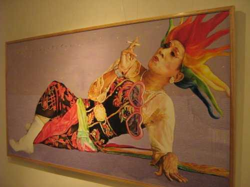

Timestamp:
20081228
 printable page
printable page
Visit the website of Biennale Jogja 2007 for a complete overview of the event, this is just a personal account from a pleased visitor.
The impact with the quality of the productions gathered in this Biennale is stunning: social, cultural and political issues are depicted with colourful tints and creativity.

The audience is constantly confronted with actual issues, be them social or intimate, absolutely touching. They are found mostly paintings and sculptures blooming from the artistic life of this place, witnessing good historical memory and vivid imagination of the young and aware scene of artists presented.
One of the surprising features is the quality of details: when these artists make art, they really do it personally, caring about all details, employing all the time it takes. Plus they do it themselves, while Bob Sick declares the death of Beuys on the walls of an avenue, ten more artists show their dedication in mastering every single aspect of their productions.
Absolutely amazing. I feel much less alone in my stubbornness when I claim the need for software artists to actually be able to read code. Now yes, given the discipline of creative people here I'm looking forward for media art to be re-born in south Asia: the Cellbutton festival is definitely the place for it, i hope to be able to attend it this year and enjoy once again the hospitality of the House of Natural Fibers.
(to be continued...)

|


|


|
 2000 - 2008
dyne.org foundation and respective authors. Verbatim
copying and distribution is permitted in any medium,
provided this notice is preserved.
Send inquiries & questions to dyne.org's hackers. 2000 - 2008
dyne.org foundation and respective authors. Verbatim
copying and distribution is permitted in any medium,
provided this notice is preserved.
Send inquiries & questions to dyne.org's hackers.
|

|